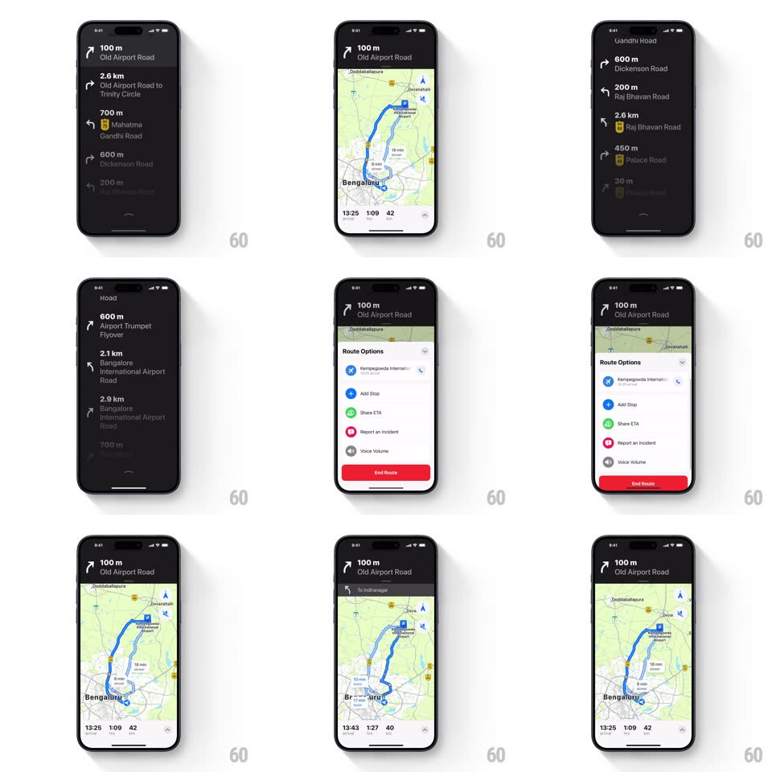

Media
Frame-by-frame

Rebuild this interaction 1:1: Apple Maps' navigation top sheet - drag the "100 m / Old Airport Road" instruction banner downward and it expands into a full-screen dark list of every turn-by-turn direction, then collapses back to the banner.

Rebuild this interaction 1:1: Apple Maps' navigation top sheet - drag the "100 m / Old Airport Road" instruction banner downward and it expands into a full-screen dark list of every turn-by-turn direction, then collapses back to the banner. ## Integration Integration: stack-agnostic spec - springs given as stiffness/damping, timed motions as duration + curve; map every value to your framework and animation library of choice. ## Scene Active navigation: map with blue route, bottom ETA bar (13:25, 1:09, 42), and the dark instruction banner up top. Expanded: full-screen dark list of steps (distance + road name + turn glyph per row), drag handle centered at the bottom of the sheet. ## Motion spec Pattern: draggable top sheet with banner-to-list morph. - The banner is a sheet detent: drag down and the sheet follows 1:1, the banner's corner radius growing (0 -> 16px) as it detaches from the top edge. - Past ~35% drag (or a flick), the sheet springs to full-screen (spring ~300/26, ~400ms); below, it snaps back to the banner (300ms). - During expansion the single instruction crossfades into the first list row (250ms) while remaining rows stagger in from 8px below (150ms each, 40ms apart). - The map dims and pushes back slightly (scale 0.98, black 25% scrim, 300ms) as the sheet rises; both restore on collapse. - ETA bar stays visible at the bottom in both states; the drag handle fades in only when the sheet is expanded. - Row separators draw in (scaleX 0 -> 1, 200ms) as rows land. ## Calibration - The sheet covers the map from the TOP down - it is not a bottom sheet. - List rows use the same dark material as the banner; the morph must read as the banner stretching. ## Reduced motion Sheet slides without row stagger; scrim fades without map scale. ## Don't miss - Each row: turn glyph, distance, road name - and upcoming rows beyond the next few are slightly dimmed. - The current instruction row stays pinned/highlighted at the top of the expanded list.